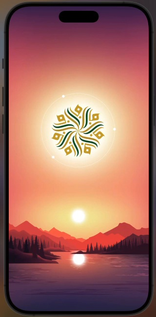
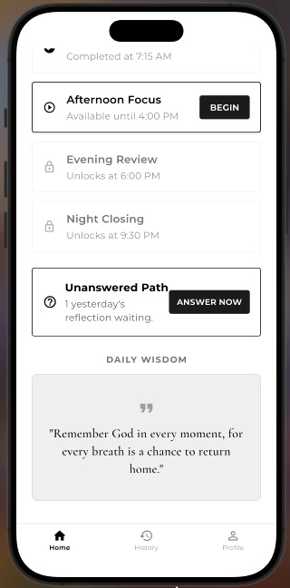
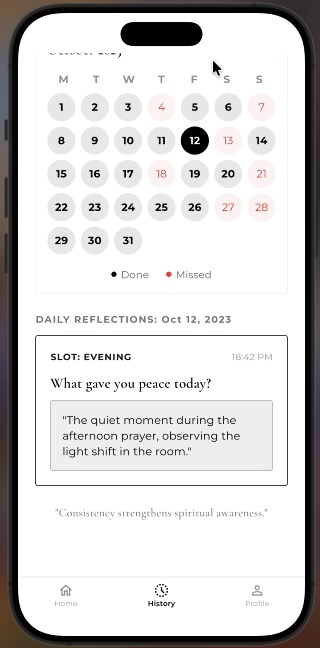
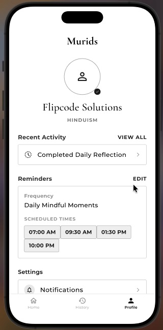

Faith,
made personal.
A private space for reflection, practice, and a closer relationship with what you believe — designed to encourage, never judge.

Your faith shouldn’t feel like a checklist.
It should feel like a relationship.
Reflect
Pause long enough to notice where your attention, choices, and faith met today.
Reconnect
Every answer is met with encouragement. There is no red, no failure state, and no “wrong” reflection.
Grow
Let small moments of awareness become a more intentional way of living.
Experience the purpose before creating an account.
Opening animation → belief selection → questions → encouraging responses → pause and reflect → login → app.
believe in?
A moment
for you.
Take a breath. Reflect. Continue with a clearer mind.
The Murids
Then the experience becomes part of everyday life.
The website uses your real app screens here, so the product marketing and the actual app feel like the same brand.

Daily rhythm
Morning, afternoon, evening, and night moments stay visible without feeling like a productivity checklist.

Remember your journey
Reflection history creates perspective without turning faith into points, trophies, or pressure.

Make it yours
Belief, reminders, language, appearance, and account controls remain simple and personal.
The words should meet the person where they are.
Belief is not hard-coded. The same reflective question can dynamically use “Mawla,” “Allah,” or other appropriate language based on the path selected by the user.